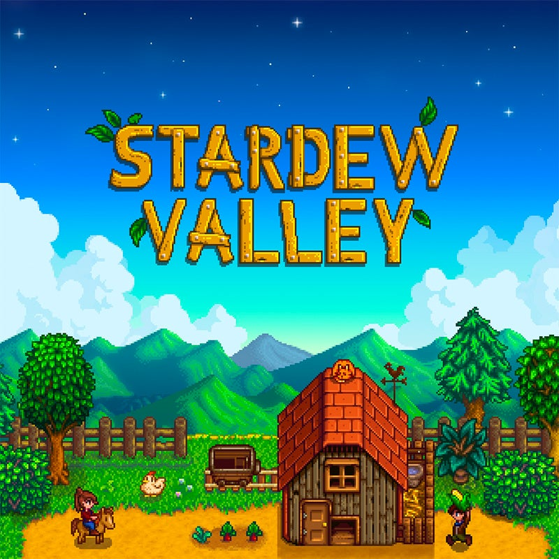
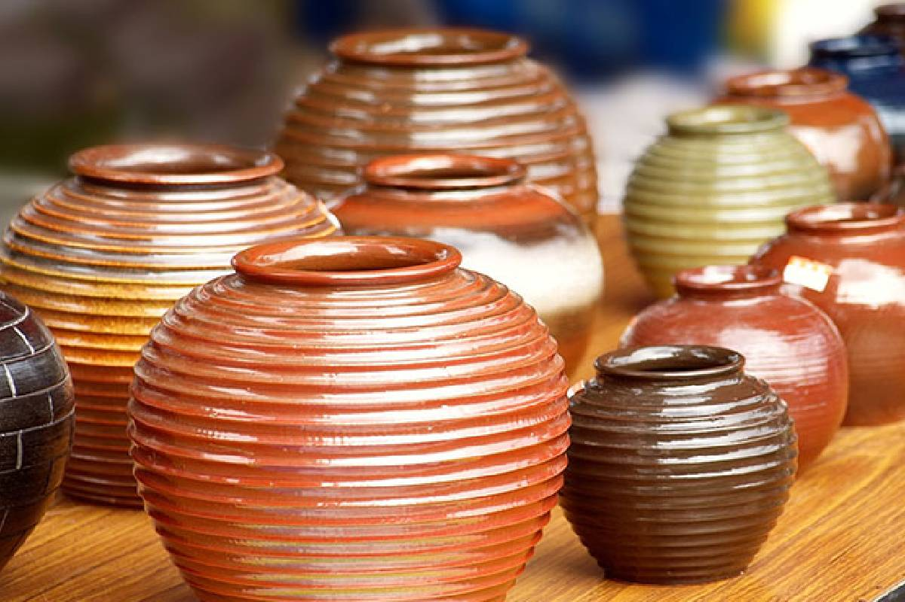
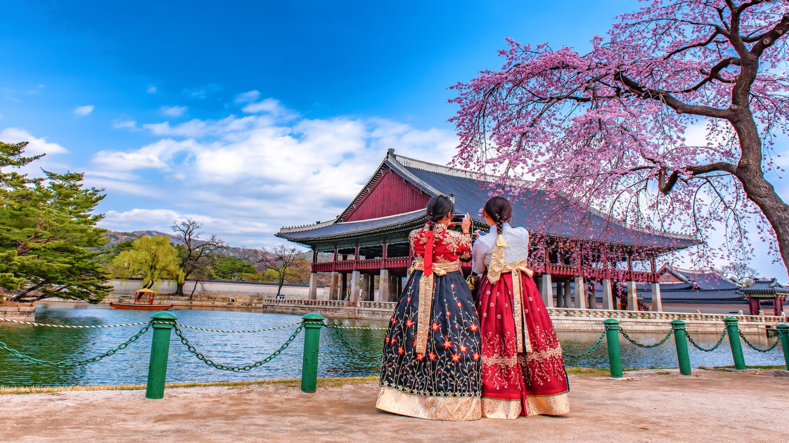
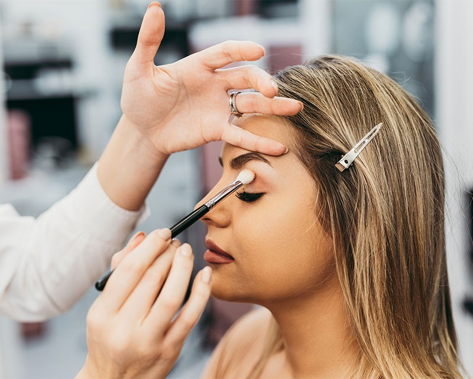

I play a lot of video games including: Minecraft, The Sims, Red Dead Redemption 2, Stardew Valley, and many more.

I like to bake even though I don't really like sweet things. Usually I bake things for other people and I like knowing people like what I've made them.
Art is one of my main interests, especially ceramics and drawing.

I'm a Korean adoptee and wasn't raised in a Korean household or environment. As I've grown up, I've become more interested in learning about my culture and trying to connect with it.

I read a lot when I can. I really like a book series called "Perveen Mistry" which is a mystery series. I also like many other genres though, not just mystery.
I'm really interested in psychology and learning more about peoples' behaviors and minds. It's not something I could see myself doing for a career in the future, so I haven't taken the AP psych class, but I took the normal one.
I don't wear makeup usually or put effort into my hair, but I'm interested in it as a possible future career.

I've been to many states, I think 43, and a few other countries and I've liked learning their history and how it connects to other people and other points in history.

Graphic design is another area of interst that I could see myself doing in the future for a job. I like art, but I don't want to be broke so being in grapbic design and doing stuff like designing brand logos and identities, sounds good.